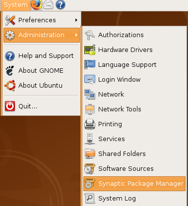
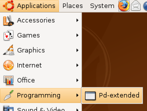
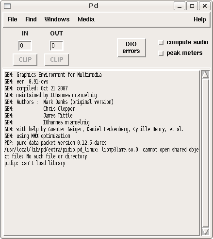

Installing on Ubuntu
Software name : Pure Data Extended
Homepage : http://puredata.info
Software version used for this installation : Pd-Extended 0.39-3
Operating System use for this installation : Ubuntu 8.04 (tested also on 7.10)
Recommended Hardware : 300 Mhz processor (CPU) minimum Â
Installation on Ubuntu Gutsy (7.10) and Ubuntu Hardy (8.04) is the same process. It is made a little tricky because Pure Data Extended requires some software that is not normally part of these operating systems but is included in an older version of Ubuntu. So we must indulge a short work around to get Pure Data Extended working correctly. Thankfully it is quick and simple.
Installing libflac7 and libjasper
Pure Data Extended requires two software 'libraries' from an older version of Ubuntu - libflac7 and libjasper
To prepare Ubuntu to install them when you install Pure Data Extended, you first need to open the Synaptic Package Manager :

You will be asked for a password. Enter in your adminstrator password (not your user password) and you will see Synaptic open.

Now we need to add the older software repositories too install these 2 software libraries. Click on Settings and then Repositories and you will see the Synaptic Repository Manager :

Now click on the second tab entitled Third-Party Software. It is here that you will now need to enter information about these two repositories:
deb http://archive.ubuntu.com/ubuntu/ feisty main restricted deb-src http://archive.ubuntu.com/ubuntu/ feisty main restricted
You need to add them one at a time by clicking on + Add and typing one of the above lines into the text field provided and then press Add Source. Then do the same for the next line.
Now close the repository manager window and you will be asked to reload the repository information because it has changed. This can be done by pushing the blue Reload button on the Synaptic interface. Then quit the Synaptic Package Manager.
Installing Pure Data
Now download the Pure Data Extended package. Visit the download page ( http://puredata.info/downloads ) :

You can download either Miller Puckette's version of Pure Data, or Pure Data Extended. Miller's version of Pure Data is called "pd-vanilla" because it does not contain any external libraries or any of the features developed by the Pure Data community which are included in Pure Data Extended. We will use Pure Data Extended for this manual, so chose your installer from the "pd-extended" section of this webpage.
In the very first section click on the link "Debian and Ubuntu (intel i386 processor)", this will forward you to a download page. Don't do anything else, the download should start automatically. When the file has downloaded browse to the files and right click on it and choose 'Open with "GDebi Package Installer"'

The package installer will open :

Now press Install Package - you will be asked to enter your password, and then Pure Data Extended will be installed. When the process is finished close GDebi and open Pure Data Extended:


Now it is important to open the Synaptic Package Manager again and disable the two new repositories so they don't cause issues with future software installations.